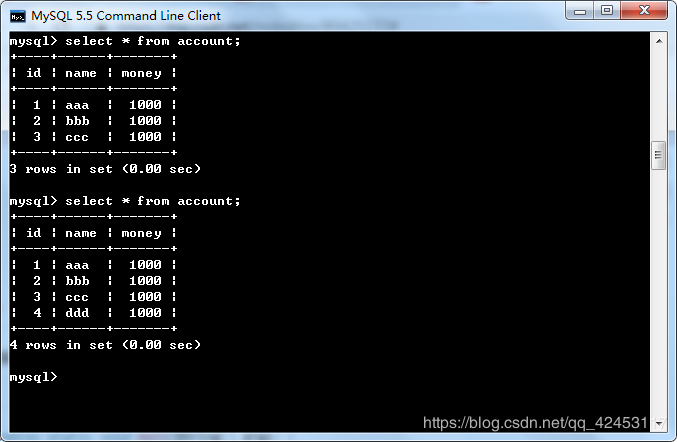
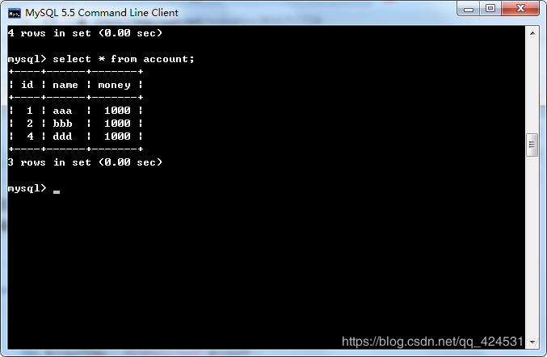

在实际的开发中，如果直接使用JDBC开发，是非常繁琐且麻烦的，所以现在的企业在开发web程序时，连接数据库一定会使用一些JDBC的框架。
在学习框架之前，得先掌握一些基础知识。
首先就来学习一下JDBC元数据。
元数据就是数据库、表、列的定义信息。
元数据相关类(DataBaseMetaData)，可以通过Connetion接口中的getMetaData()方法来获得一个DataBaseMetaData对象。
通过实例感受一下：
新建一个web项目，名为demo
因为在之前已经学习了数据库连接池技术，所以之后有关数据库操作的部分都可以使用连接池，推荐使用c3p0，因为它相较于别的连接池更加简单和人性化。
重新编写工具类JDBCUtils
/**
* JDBC 工具类，抽取公共方法
*
* @author seawind
*
*/
public class JDBCUtils {
//获得数据库的连接 通过c3p0连接池
private static DataSource dataSource = new ComboPooledDataSource();
public static Connection getConnection() throws SQLException{
return dataSource.getConnection();
}
// 释放资源
public static void release(ResultSet rs, Statement stmt, Connection conn) {
if (rs != null) {
try {
rs.close();
} catch (SQLException e) {
e.printStackTrace();
}
rs = null;
}
release(stmt, conn);
}
public static void release(Statement stmt, Connection conn) {
if (stmt != null) {
try {
stmt.close();
} catch (SQLException e) {
e.printStackTrace();
}
stmt = null;
}
if (conn != null) {
try {
conn.close();
} catch (SQLException e) {
e.printStackTrace();
}
conn = null;
}
}
}新建测试类MetaDataTest，编写测试代码
@Test
public void demo1() throws SQLException{
//通过Connection对象获得DataBaseMetaData
Connection conn = JDBCUtils.getConnection();
DatabaseMetaData databaseMetaData = conn.getMetaData();
//通过DatabaseMetaData可以获得JDBC连接的参数信息
System.out.println(databaseMetaData.getURL());
System.out.println(databaseMetaData.getDriverName());
System.out.println(databaseMetaData.getUserName());
//获得某张表的主键信息
ResultSet rs = databaseMetaData.getPrimaryKeys(null, null, "account");
while(rs.next()){
//获得表名
System.out.println(rs.getString("TABLE_NAME"));
//获得列名
System.out.println(rs.getString(4));
}
}都是一些十分简单的API，没有什么可说的，自己看看API文档应该就能明白。
接下来是第二个内容，参数元数据(ParameterMataData)，可以获得预编译sql语句中？的信息。
通过PreparedStatement调用getParameterMataData()得到。
演示一下。
编写测试代码
@Test
public void demo2() throws SQLException{
Connection conn = JDBCUtils.getConnection();
String sql = "select * from account where name = ?";
PreparedStatement stmt = conn.prepareStatement(sql);
//通过ParameterMataData获得？的相关信息
ParameterMetaData parameterMetaData = stmt.getParameterMetaData();
//获得参数个数
int count = parameterMetaData.getParameterCount();
System.out.println(count);
//获得参数类型 该方法并不是所有的数据库都支持 MySQL不支持
int type = parameterMetaData.getParameterType(1);
System.out.println(type);
}其中的getParameterType()方法并不是所有的数据库都支持，而恰好MySQL数据就不支持该方法。那如何让该方法在MySQL数据库被支持呢？可以在配置Url的时候在后面加上?generateSimpleParameterMetadata=true，然后运行测试代码，该方法返回的值是12，通过查看源码，得知12代表的是数据库中的varchar类型。
/**
* <P>The constant in the Java programming language, sometimes referred
* to as a type code, that identifies the generic SQL type
* <code>VARCHAR</code>.
*/
public final static int VARCHAR = 12;但是，请注意了，其实不管你的预编译sql语句的参数是什么类型，在MySQL数据库用该方法查询得到的数据类型永远都会是12，也就是varchar类型。
接下来是第三个元数据，叫做结果集元数据(ResultSetMetaData)
编写测试代码
@Test
public void demo3() throws SQLException{
//测试结果集元数据ResultSetMetaData
Connection conn = JDBCUtils.getConnection();
String sql = "select * from account";
PreparedStatement stmt = conn.prepareStatement(sql);
ResultSet rs = stmt.executeQuery();
//获得结果集元数据
ResultSetMetaData resultSetMetaData = rs.getMetaData();
//获得列数
int count = resultSetMetaData.getColumnCount();
//打印数据表的第一行
for(int i = 1;i <= count;i++){
System.out.print(resultSetMetaData.getColumnName(i) + "\t");
}
System.out.println();
//打印每列类型
for(int i = 1;i <= count;i++){
System.out.print(resultSetMetaData.getColumnTypeName(i) + "\t");
}
System.out.println();
//打印表数据
while(rs.next()){
for(int i = 1;i <= count;i++){
System.out.print(rs.getObject(i) + "\t");
}
System.out.println();
}
}有了元数据的基础之后，我们就可以自己来编写JDBC框架了。
先创建一个张表，并初始化数据
create table account(
id int primary key not null auto_increment,
name varchar(40),
money double
);
insert into account values(null,'aaa',1000);
insert into account values(null,'bbb',1000);
insert into account values(null,'ccc',1000);现在就来为该表编写DAO程序。
新建com.wang.domain包，然后在该包下创建实体类Account。
/**
* 属性和列对应
* @author Administrator
*
*/
public class Account {
private int id;
private String name;
private double money;
public int getId() {
return id;
}
public void setId(int id) {
this.id = id;
}
public String getName() {
return name;
}
public void setName(String name) {
this.name = name;
}
public double getMoney() {
return money;
}
public void setMoney(double money) {
this.money = money;
}
}
然后新建com.wang.dao包，在该包下创建类AccountDao。
/**
* 插入一个账户的数据
* @param account
*/
public void insertAccount(Account account){
Connection conn = null;
PreparedStatement stmt = null;
try {
conn = JDBCUtils.getConnection();
String sql = "insert into account values(null,?,?)";
stmt = conn.prepareStatement(sql);
//设置参数
stmt.setString(1, account.getName());
stmt.setDouble(2, account.getMoney());
stmt.executeUpdate();
} catch (SQLException e) {
e.printStackTrace();
}finally{
JDBCUtils.release(stmt, conn);
}
}编写测试代码，调用执行
public static void main(String[] args) {
Account account = new Account();
account.setName("ddd");
account.setMoney(1000);
new AccountDao().insertAccount(account);
}查询数据库，数据被成功添加到数据库。

更新和删除的方法和插入类似，不作过多赘述。
假设这个时候有很多的数据库表，那我们都要给每一个数据库表编写相对应的方法，会发现，重复代码非常的多，怎么样能够简化它呢？我们应该抽取通用的方法代码。
新建包com.wang.framework，在该包下新建类JDBCFramework。
/**
* 自定义的JDBC框架
* @author Administrator
*
*/
public class JDBCFramework {
/**
* 通用的insert，update和delete方法
* @param sql 预编译需要的sql
* @param args 根据sql中的？准备的参数
*/
public static void update(String sql,Object... args){
Connection conn = null;
PreparedStatement stmt = null;
try {
conn = JDBCUtils.getConnection();
stmt = conn.prepareStatement(sql);
//设置参数 根据？设置参数
ParameterMetaData parameterMetaData = stmt.getParameterMetaData();
//获得参数个数
int count = parameterMetaData.getParameterCount();
for(int i = 1;i <= count;i++){
stmt.setObject(i, args[i - 1]);
}
stmt.executeUpdate();
} catch (SQLException e) {
e.printStackTrace();
}finally{
JDBCUtils.release(stmt, conn);
}
}
}
然后回到类AccountDao中，编写一个删除的方法。
public void deleteAccount(Account account) {
String sql = "delete from account where id = ?";
JDBCFramework.update(sql, account.getId());
}因为现在有了自己编写好的框架，所以实现一个删除方法是非常简单的。
编写测试代码
public static void main(String[] args) {
Account account = new Account();
account.setId(3);
new AccountDao().deleteAccount(account);
}运行测试代码

id为3的用户数据被成功删除。
插入、修改方法和删除类似。但是该框架无法用于查询，因为没有查询所对应的结果集。
我们来抽取一个查询方法，用于数据库表的通用查询。
在com.wang.framework包下新建接口MyResultSetHandler。
public interface MyResultSetHandler {
/**
* 将结果集中的数据封装成对象
* @param rs
* @return
*/
public Object handle(ResultSet rs);
}
在JDBCFramework类中添加方法。
/**
* 通用的查询方法
*/
public static Object query(String sql,MyResultSetHandler handler,Object... args){
Object obj = null;
Connection conn = null;
PreparedStatement stmt = null;
ResultSet rs = null;
try {
conn = JDBCUtils.getConnection();
stmt = conn.prepareStatement(sql);
//设置参数
ParameterMetaData parameterMetaData = stmt.getParameterMetaData();
int count = parameterMetaData.getParameterCount();
for(int i = 1;i <= count;i++){
stmt.setObject(i, args[i - 1]);
}
rs = stmt.executeQuery();
obj = handler.handle(rs);
} catch (SQLException e) {
e.printStackTrace();
}finally{
JDBCUtils.release(rs, stmt, conn);
}
return obj;
}这样查询框架就写好了，当调用者调用该方法时需要自己实现接口，完成查询。
public Account findById(int id){
//使用自定义框架查询
String sql = "select * from account where id = ?";
MyResultSetHandler handler = new MyResultSetHandler() {
public Object handle(ResultSet rs) {
try {
if(rs.next()){
Account account = new Account();
account.setId(rs.getInt("id"));
account.setName(rs.getString("name"));
account.setMoney(rs.getDouble("money"));
}
} catch (SQLException e) {
e.printStackTrace();
}
return null;
}
};
return (Account) JDBCFramework.query(sql, handler, id);
}
编写测试代码。
public static void main(String[] args){
Account account = new AccountDao().findById(1);
System.out.println(account.getName());
}运行测试代码，成功查询到表数据。
会发现，要想实现查询，调用者就必须实现接口，接下来我们利用泛型和反射帮助调用者实现接口。
这块内容有点复杂，就直接贴代码了。
修改MyResultSetHandler接口
public interface MyResultSetHandler<T> {
/**
* 将结果集中的数据封装成对象
* @param rs
* @return
*/
public T handle(ResultSet rs);
}新建类MyBeanHandler
public class MyBeanHandler<T> implements MyResultSetHandler<T>{
private Class<T> domainClass;
public MyBeanHandler(Class<T> domainClass){
this.domainClass = domainClass;
}
public T handle(ResultSet rs) {
try{
//获得结果集元数据
ResultSetMetaData resultSetMetaData = rs.getMetaData();
int count =resultSetMetaData.getColumnCount();
BeanInfo beanInfo = Introspector.getBeanInfo(domainClass);
PropertyDescriptor[] propertyDescriptors = beanInfo.getPropertyDescriptors();
if(rs.next()){
//获得实例
T t = domainClass.newInstance() ;
for(int i = 1;i <= count;i++){
String columnName = resultSetMetaData.getColumnName(i);
//获得列名 需要去查找匹配属性
for(PropertyDescriptor descriptor : propertyDescriptors){
if(columnName.equals(descriptor.getName())){
//列名存在一个同名的属性
//将列的值存入属性
Method method = descriptor.getWriteMethod();
method.invoke(t,rs.getObject(columnName));
}
}
}
return t;
}
}catch (Exception e) {
e.printStackTrace();
}
return null;
}
}
修改类JDBCFramework的查询方法
/**
* 通用的查询方法
*/
public static <T>T query(String sql,MyResultSetHandler<T> handler,Object... args){
T obj = null;
Connection conn = null;
PreparedStatement stmt = null;
ResultSet rs = null;
try {
conn = JDBCUtils.getConnection();
stmt = conn.prepareStatement(sql);
//设置参数
ParameterMetaData parameterMetaData = stmt.getParameterMetaData();
int count = parameterMetaData.getParameterCount();
for(int i = 1;i <= count;i++){
stmt.setObject(i, args[i - 1]);
}
rs = stmt.executeQuery();
obj = handler.handle(rs);
} catch (SQLException e) {
e.printStackTrace();
}finally{
JDBCUtils.release(rs, stmt, conn);
}
return obj;
}在AccountD类中修改查询方法
public Account findById(int id){
String sql = "select * from account where id = ?";
return JDBCFramework.query(sql, new MyBeanHandler<Account>(Account.class),id);
}重新运行测试代码，查询成功。